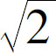
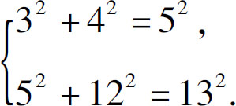
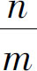
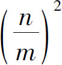
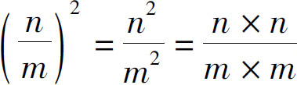

的确不是一个分数，不过这事儿暂时保密，等我再研究研究，彻底把这个问题弄清楚以后再对外公布．结果当天晚上，希帕索斯就被人捆起来扔河里了．
的确不是一个分数，不过这事儿暂时保密，等我再研究研究，彻底把这个问题弄清楚以后再对外公布．结果当天晚上，希帕索斯就被人捆起来扔河里了．
里隐藏的一桩血案我们提到过，开方是乘方的逆运算，它既可以通过根号来表示，也可以通过指数是分数的形式来表达．不过，我们也发现了一个问题，那就是开方好像并不总能得到一个准确的数字，比如：4开平方可以得到2，那么2开平方得到多少呢？关于这个问题还隐藏了一桩血案，历史上第一个问这个问题的人，就被人给扔河里淹死了．而且这个杀人的人并不是别人，而是受害人的老师！那么这到底是怎么回事呢？让我们一起回到公元前6世纪的古希腊．
当时，古希腊先贤都在讨论世界本原的问题．哲学家恩培多克勒认为：我们生存的这个世界是由水、火、土、气四种物质组成的，这种观点得到了大多数人的支持．然而，有一个人却旗帜鲜明地指出“数字才是万物的本原”，他就是著名的数学家毕达哥拉斯．毕达哥拉斯不仅发现了大自然中隐藏的很多数学规律，而且还组织一帮自己的信徒，成立了毕达哥拉斯学派，他们希望通过研究数字的奥秘探知宇宙的真理．我们很难想象，在那个古朴的时代，毕达哥拉斯是怎样产生如此深远的见解的．正是这个见解影响了后来的柏拉图和欧几里得，西方的数学也因此取得了辉煌的成就．
毕达哥拉斯和他的门徒们通过多边形的点数来描绘自然数之间的关系，把一些数字叫作三角形数、正方形数、五边形数，而且还发现了这些数字之间的计算规律．他们还发现，在弹奏乐器时，弦所发出的声音的频率和琴弦的长度有关．同时，他们把天文现象归于数字，认为行星的运动会发出声音，而且行星运动所产生的天籁之音一定是和谐的．
他们对数字的痴迷、对数字的崇拜达到了无以复加的地步．他们认为，所有的数字都代表了某种特定的含义．比如：1代表理性，2代表女性，3代表男性，4代表正义，5代表婚姻，6代表神灵，7代表幸福，8代表和谐，9代表理想，10代表完美．他们为什么会产生这种想法呢？那是因为这些数字之间符合某种运算关系，比如2＋3＝5，所以女人加男人等于婚姻；2＋5＝7，所以女性加婚姻就等于幸福，3＋4＝7，所以男性加上正义也等于幸福．他们还认为，世界上的所有数字都是由整数和分数组成的．正因为如此痴迷于数字的魅力，毕达哥拉斯学派也有着非常苛刻的教规．
不过，毕达哥拉斯为世人所知，主要是因为一个著名的发现：三角形的两个直角边长度的平方和，等于斜边长度的平方．这个在我国被称为勾股定理的数学规律，在西方一直被称为毕达哥拉斯定理．而我们开头提到的故事主人公，也恰恰是因这个著名的定理而死．他叫希帕索斯，是毕达哥拉斯的学生．
话说，一天毕达哥拉斯在浴室洗澡的时候，从浴室的地砖上发现了这个定理．他从浴室出来，就迫不及待地把这个定理告诉了希帕索斯．他指出，无论直角三角形的形状大小如何变化，每个直角三角形的两条直角边长度的平方和都等于斜边长度的平方，而且他还给出了一系列符合这个条件的整数，比如：

就在毕达哥拉斯兴高采烈地描述时，希帕索斯突然问了一句：“老师，如果直角三角形的两条直角边都是1，斜边长度应该是多少呢？”这个题目看起来很简单，斜边长度等于两个直角边长度的平方和，1的平方还是1，两个1的和是2，所以斜边长度的平方应该是2．毕达哥拉斯大概计算了一下，说：“这个数字大约是1.414吧，今天太晚了，算不出最后结果了，要不，你晚上接着算算吧．”希帕索斯就愉快地答应了．
当时他以为只要接着往下算，顶多再计算个十几位，就可以得出精确的结果了．可他一口气算了100位，仍然没有算完的迹象，这下希帕索斯慌了：这个结果该不会算不完吧？于是他按照反向思路试了试，这样一来，希帕索斯发现，这个数字果然是一个永远算不完的数字．那么，他是怎么算的呢？
首先，他假设这个数字是能算完的，也就是说，如果把2开平方以后能算完，那么它就一定是一个分数，这个分数可以约分，假设将它约分到最简分数以后的结果等于

，那么
自然就应该等于2．根据商的幂等于幂的商的原理：
．这个结果应该等于2，那么矛盾就出现了：我们假设的是n 和m 不能约分，那么分子上的n ×n 和分母上的m ×m 也应该不能约分．所以一开始假设2的平方根是一个分数肯定就是错的．换句话说，2的平方根应该不是一个分数．这种推理方式叫作反证法或者归谬法，即我们先假设一个结论是对的，然后再通过严密的逻辑推理推导出一对矛盾的结果，以此来反证假设是错误的．如果不采取这种方法，直接计算2的平方根是算不完的，即使我们计算了1000位，也不能证明再计算10000位仍然算不完；同理，算了10000位也不能证明100000位算不完．对于这样一个看似无解的问题，我们只要转换一下思路，通过反证法就可以顺利地找到答案．发现了这个结果以后希帕索斯大吃一惊，他马上告诉了自己的老师．毕达哥拉斯一看，希帕索斯的证明过程是无懈可击的．于是他就不得不对希帕索斯说，看来
的确不是一个分数，不过这事儿暂时保密，等我再研究研究，彻底把这个问题弄清楚以后再对外公布．结果当天晚上，希帕索斯就被人捆起来扔河里了．
听到这里，我们就有个疑问了：2的平方根是不是分数有什么要紧？为什么一定要杀人呢？其实这个问题还真挺严重的，它被称为数学史上的第一次数学危机．因为在那个时候，我们已经知道了分数和小数间是可以相互转化的，无论是有限小数还是无限循环小数，都可以转化成分数，而且这个分数的分子和分母又是来源于整数的，所以大家自然认为世界上所有的数字都是来源于整数的．但是如果有一个数字，它既不是整数，又不是分数，这意味着什么呢？这意味着它是一个无限不循环的小数．要知道，在毕达哥拉斯学派里，每个数字可都被赋予了特殊的含义，那么，这种无限不循环小数的发现，无疑是动摇了他们整个学派的理论基础，会给他们的信仰带来严重的危机．这样的打击实在是太大了．
我们应该怎么样评价毕达哥拉斯和他所创立的学派呢？一分为二地来看待：一方面，我们必须承认，毕达哥拉斯独具慧眼地指出了“数是万物的本原”，这种观点是科学哲学的基础，具有非常深远的意义，引发了无数智者的思考；另一方面，我们也要明白，毕达哥拉斯学派对数字的过度崇拜，超出了理智的范围，是一种愚昧的表现．为什么一个人会集智慧和愚昧于一身呢？没办法，这就叫历史局限性．
远在公元前6世纪的那个年代，人们对这个世界的了解才刚刚开始，对于毕达哥拉斯而言，他的知识支撑不了他的理想，他的能力支撑不了他的雄心．跟毕达哥拉斯类似，亚里士多德仅仅试验了羽毛和石头就认定：重的物体比轻的物体下落速度更快，其实，他只要多比较几块石头就会发现，下落速度和重量是没有关系的．毕达哥拉斯其实也犯了同样的错误，他在没有认知整个世界的条件下，就开始了改变世界的步伐．
这一点对于我们而言，同样需要引以为鉴．很多人高喊着改变世界的口号，实际上不但不具备改变世界的能力，甚至连认识这个世界都还没有完成．所以，我们需要保持谦虚谨慎的态度，保持终身学习的习惯，要向书本学习，向他人学习，向大自然学习．